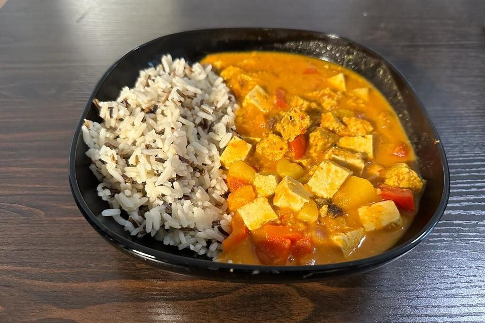

Ingredients
- 400g butternut squash
- 200ml soy cooking cream
- 175 smoked tofu
- 15g sage leaves
- 2 tbsp nutritional yeast
- 1/2 head garlic
- 1/2 tsp salt - adjust to taste
- 1 pinch black pepper
- olive oil
- 200g spagetti
- 1/4 lemon - juice
- arugula (topping)
Instructions
- Preheat the oven to 200°C. Peel the skin of the squash and cut it in bite-sized pieces
- Toss the squash pieces in oil and sprinkle on some salt and pepper. Place it back on the baking tray
- Cut the top head off of the garlic. Drizzle some oil on it and place it also on the baking tray. Bake the garlic and squash for 20 minutes
- Cook the pasta until tender
- Remove the garlic from the oven. Flip over the squash and bake for another 10 - 15 minutes
- Meanwhile heat a large pan on medium heat. Add oil and sage and cook for 1-2 minutes and then add the roasted garlic and mash it all together until it's puree
- Add 80ml of pasta cooking water, along with the pasta, smoked tofu, nutritional yeast and cooking cream to the pan
- Add the lemon juice and squash. Top it off with arugula